# Illustration: collecting open COVID data from OWID GitHub
## Packages used: vroom, tidyverse, finalfit
## Use install.packages() function to install these packages.
library(vroom) # Fast reading in data
library(finalfit) #for checking missingness and output visualization
library(tidyverse)
library(RColorBrewer) #for choice of more colors
library(scales) # for controlling scales for x and y axes
# Reading all real time data directly from OWID GitHub
# vroom is the champion in reading github date, < 3 sec.
owidall = vroom("https://github.com/owid/covid-19-data/blob/master/public/data/owid-covid-data.csv?raw=true")5 Data Collection with R
This chapter covers the basic methods of collecting data using R. Simple scrapping methods will be introduced like using rvest , rtweet and academictwitteR.
5.0.1 What is Big Data?
The [term] Big Data is about data that has huge volume, cannot be on one computer. Has a lot of variety in data types, locations, formats and form. It is also getting created very very fast (velocity) (Doug Laney 2001).
Big data is about the size of the data file. Big data is about the data generating process and data collection process.
Survey data, no matter how many cases, should be classified as small data instead of big data due to the collection process and design.
Burt Monroe, the founder of the Social Data Analytics program at the Penn State University, which is the first of its kind, gave new V’s to Big Data.
- Volume
- Variety
- Velocity
- Vinculation
- Validity
He argues that Big Data is not just big, diverse and fast, it is inter-connected and must search for significance.
5.0.2 Why we need to collect data or original data?
One key element of data programming is the program is created for data, including collecting and updating data. Collection or production of data constitutes the major component in data science. No data scientist can count on others to provide data without knowing the source and generation method of the data. Knowing the data generation process is critical in preparing data for the rest of the data science processes including management, visualization and in particular modeling. Imagine if the date generation process is unknown, visualization and model thus created could be faulty. Missing values, for instance, can mask the visualization and totally distort the modeling results.
5.0.3 Types of data by data generation
- Made data vs. Found data
- Structured vs. Semi/unstructured
- Primary vs. secondary data
- Derived data
- metadata, paradata
5.0.3.1 Made data (by production)
- Survey
- Interviews
- Experiments
- Focus group
5.0.3.2 Found data (by collection)
Open data
API
Non-API
Open data
Open data refers to the type of data usually offered by government (e.g. Census), organization or research institutions (e.g. ICPSR. Some may require application for access and others may be open for free access (usually via websites or GitHub).
Since open data are provided by government agencies or research institutions, these data files are often:
- Structured
- Well documented
- Ready for data/research functions
- API
API stands for Application Programming Interface. It is a web service that allows an interaction with, and retrieval of, structured data from a company, organization or government agency.
Example: Social media (e.g. Facebook, YouTube, Twitter), Government agency (e.g. Congress)
APIs can take many different forms and be of varying quality and usefulness. RESTful API (Representational State Transfer) is a means of transferring data using web protocols
Like open data, data available through API are generally:
- Structured
- Somewhat documented
- Not necessary fully open
- Subject to the discretion of data providers (e.g. Not all variables are available, rules may change without announcements, etc.)
Example:
- Non-API
For the type of found data not available via API or open access, one can use non-API methods to collect this kind of data. These methods include scraping, which is to simulate web browsing but through automated scrolling and parsing to collect data. These data are usually non-structured and often times noisy. Researchers also have little control over data generation process and sampling design.
Non-API data are generally:
- Non-structured
- Noisy
- Undocumented with no or little information on sampling
5.0.4 Illustrations: Open data
COVID
Many organizations put in tremendous efforts to collect, visualize and disseminate COVID data to facilitate research of the pandemic. The most well-known is the Johns-Hopkins Coronavirus Resource Center. Collecting data from all over the world data, these data are stored in the Center’s GitHub ready for any researchers to get access. Other widely used data GitHub’s includng New York Times and Our World in Data (OWID)
The following illustration uses the OWID data
as.factor(owidall[,1:3]) # Redefining first 3 columns as factor (categorical variables) iso_code continent location
<NA> <NA> <NA>
3 Levels: c("AFG", "OWID_AFR", "ALB", "DZA", "AND", "AGO", "AIA", "ATG", "ARG", "ARM", "ABW", "OWID_ASI", "AUS", "AUT", "AZE", "BHS", "BHR", "BGD", "BRB", "BLR", "BEL", "BLZ", "BEN", "BMU", "BTN", "BOL", "BES", "BIH", "BWA", "BRA", "VGB", "BRN", "BGR", "BFA", "BDI", "KHM", "CMR", "CAN", "CPV", "CYM", "CAF", "TCD", "CHL", "CHN", "COL", "COM", "COG", "COK", "CRI", "CIV", "HRV", "CUB", "CUW", "CYP", "CZE", "COD", "DNK", "DJI", "DMA", "DOM", "ECU", "EGY", "SLV", "GNQ", "ERI", "EST", "SWZ", "ETH", "OWID_EUR", "OWID_EUN", \n"FRO", "FLK", "FJI", "FIN", "FRA", "PYF", "GAB", "GMB", "GEO", "DEU", "GHA", "GIB", "GRC", "GRL", "GRD", "GUM", "GTM", "GGY", "GIN", "GNB", "GUY", "HTI", "OWID_HIC", "HND", "HKG", "HUN", "ISL", "IND", "IDN", "OWID_INT", "IRN", "IRQ", "IRL", "IMN", "ISR", "ITA", "JAM", "JPN", "JEY", "JOR", "KAZ", "KEN", "KIR", "OWID_KOS", "KWT", "KGZ", "LAO", "LVA", "LBN", "LSO", "LBR", "LBY", "LIE", "LTU", "OWID_LIC", "OWID_LMC", "LUX", "MAC", "MDG", "MWI", "MYS", "MDV", "MLI", "MLT", "MHL", "MRT", "MUS", "MEX", \n"FSM", "MDA", "MCO", "MNG", "MNE", "MSR", "MAR", "MOZ", "MMR", "NAM", "NRU", "NPL", "NLD", "NCL", "NZL", "NIC", "NER", "NGA", "NIU", "OWID_NAM", "PRK", "MKD", "OWID_CYN", "MNP", "NOR", "OWID_OCE", "OMN", "PAK", "PLW", "PSE", "PAN", "PNG", "PRY", "PER", "PHL", "PCN", "POL", "PRT", "PRI", "QAT", "ROU", "RUS", "RWA", "SHN", "KNA", "LCA", "SPM", "VCT", "WSM", "SMR", "STP", "SAU", "SEN", "SRB", "SYC", "SLE", "SGP", "SXM", "SVK", "SVN", "SLB", "SOM", "ZAF", "OWID_SAM", "KOR", "SSD", "ESP", "LKA", "SDN", \n"SUR", "SWE", "CHE", "SYR", "TWN", "TJK", "TZA", "THA", "TLS", "TGO", "TKL", "TON", "TTO", "TUN", "TUR", "TKM", "TCA", "TUV", "UGA", "UKR", "ARE", "GBR", "USA", "VIR", "OWID_UMC", "URY", "UZB", "VUT", "VAT", "VEN", "VNM", "WLF", "ESH", "OWID_WRL", "YEM", "ZMB", "ZWE") ...# Subset by year
owid2022 = subset(owidall, format(as.Date(date),"%Y")==2022)
owid2021 = subset(owidall, format(as.Date(date),"%Y")==2021)
owid2020 = subset(vroom("https://github.com/owid/covid-19-data/blob/master/public/data/owid-covid-data.csv?raw=true"), format(as.Date(date),"%Y")==2020) # Direct from source
# Clean up OWID* cases
# Deselect cases/rows with OWID
owidall = owidall[!grepl("^OWID", owidall$iso_code), ]
owid2022 = owid2022[!grepl("^OWID", owid2022$iso_code), ]
owid2021 = owid2021[!grepl("^OWID", owid2021$iso_code), ]
owid2020 = owid2020[!grepl("^OWID", owid2020$iso_code), ]
owidall$location=as.factor(owidall$location)
# Subset by country: United States
owidus = subset(owidall, location=="United States")
owideu = subset(owidall, continent=="Europe")
owidasia = subset(owidall, continent=="Asia")# Get today's COVID data
owidtoday = subset(vroom("https://github.com/owid/covid-19-data/blob/master/public/data/owid-covid-data.csv?raw=true"), date == Sys.Date())
owid09302022 = subset(owidall, date == "2022-09-30")
owidUStoday = subset(owid2022, location == "United States" & date >="2022-09-30")
owidtw2022 = subset(owid2022, location == "Taiwan")options(scipen=999)
par(family = "Palatino")# Europe data
y = owideu$new_deaths
x = as.Date(owideu$date)
plot(x,y, pch=20, col="#E7298A", cex = .5, xaxt='n', xlab = "Date", ylab = "COVID Deaths in Europe (Daily)")
axis(1, x, format(x, "%Y-%m"), cex.axis = .7, las = 3 , gap.axis =1.5, tick = FALSE)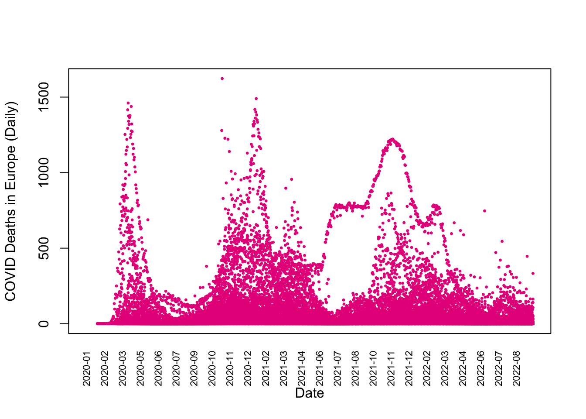
# identify(x,y,owideu$location, ps=8, atpen=TRUE)
# Use identify function to manually click on cases using mouse# Asia data
y = owidasia$new_deaths
x = as.Date(owidasia$date)
plot(x,y, pch=20, col="#66A61E", cex = .5, xaxt='n', xlab = "Date", ylab = "COVID Deaths in Asia (Daily)")
axis(1, x, format(x, "%Y-%m"), cex.axis = .7, las = 3 , gap.axis =1.5, tick = FALSE)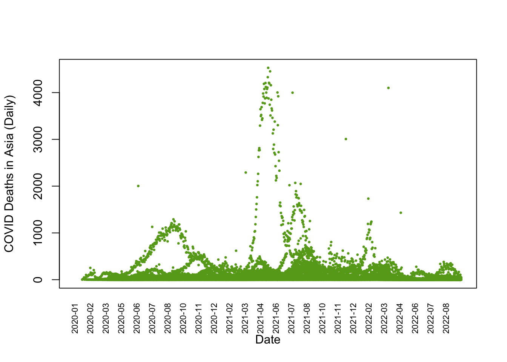
# identify(x,y,owidasia$location, ps=8, atpen=TRUE)
# Format date
owidall$date<-as.Date(owidall$date,format="%Y-%m-%d")
# World: new cases
plot(owidall$date,owidall$new_cases, pch = 20, cex = .3, xaxt='n')
points(owidtw2022$date,owidtw2022$total_tests, pch = 20, cex = .5, xaxt='n', col = "firebrick")
axis(1, owidall$date, format(owidall$date, "%Y-%m-%d"), cex.axis = .3, las = 3 )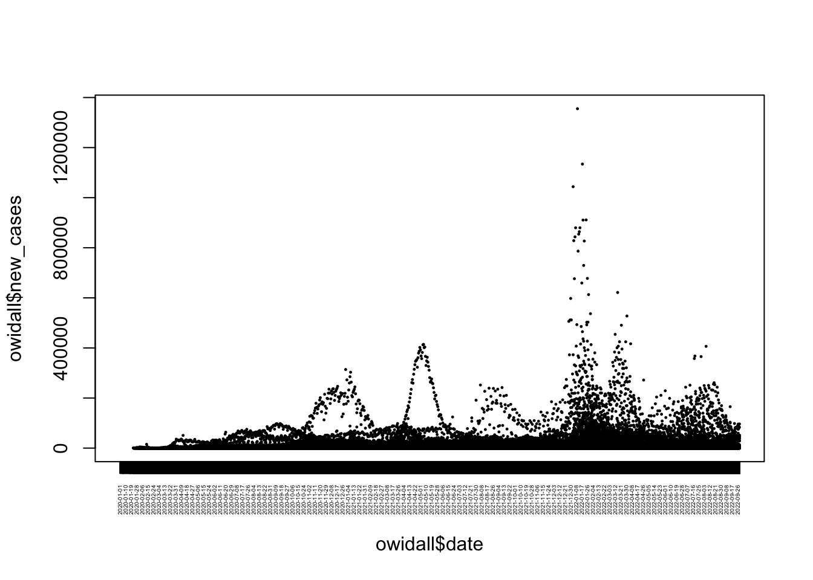
library(descr)
freq(owidall$continent)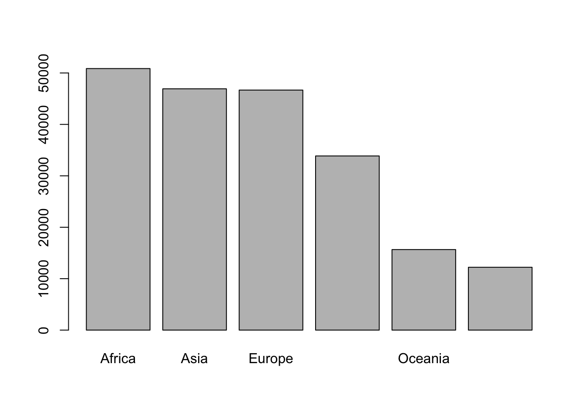
owidall$continent
Frequency Percent
Africa 50858 24.665
Asia 46919 22.754
Europe 46675 22.636
North America 33864 16.423
Oceania 15661 7.595
South America 12221 5.927
Total 206198 100.000options(scipen=999) # No sci notation
# format(new_cases, scientific = F)Stock data
# Collecting Stock data and plotting stock data as time series
# install.packages(c("quantmod", "ggplot2", "magrittr","broom","googlesheet4"))
# lapply(c("quantmod", "ggplot2", "magrittr","broom","googlesheet4"), require, character.only = TRUE)
library(quantmod)
library(ggplot2)
library(magrittr)
library(broom)
# Setting time period
start = as.Date("2010-07-01")
end = as.Date("2022-09-30")
getSymbols("AAPL")[1] "AAPL"chartSeries(AAPL, theme="white")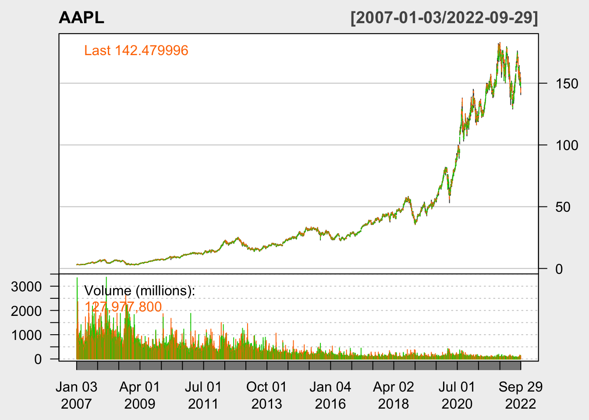
# Download Taiwan Weighted Index
getSymbols("^TWII", src="yahoo") # TWSE:IND[1] "^TWII"# Download Dow Jones Industrial Average
getSymbols("^DJI", src="yahoo") # Dow Jones Industrial Average[1] "^DJI"# Simple plot
plot(TWII, col="darkblue")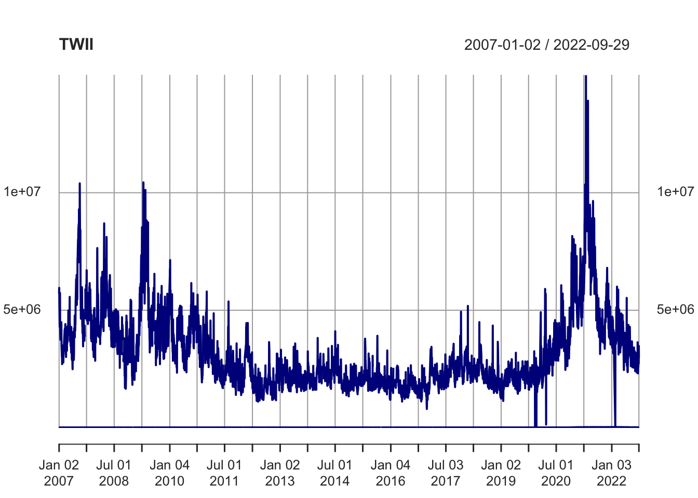
# Plot candle stick and other charts using quantmod
chartSeries(DJI)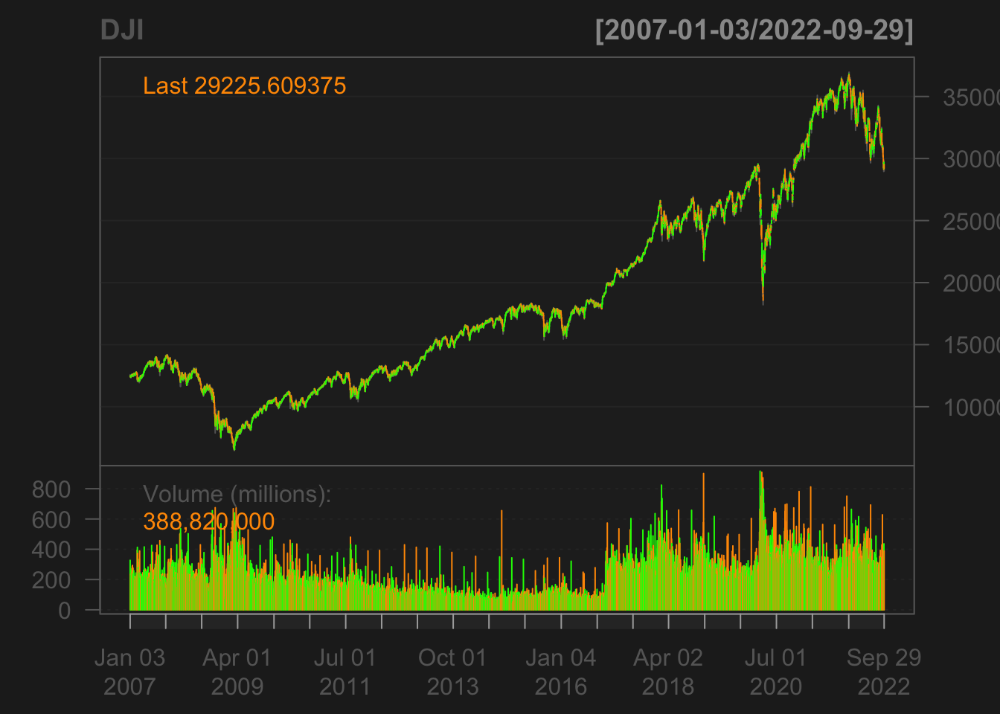
chartSeries(DJI, type = c("auto", "candlesticks", "matchsticks", "bars","line"), subset='last 4 months',theme = "white")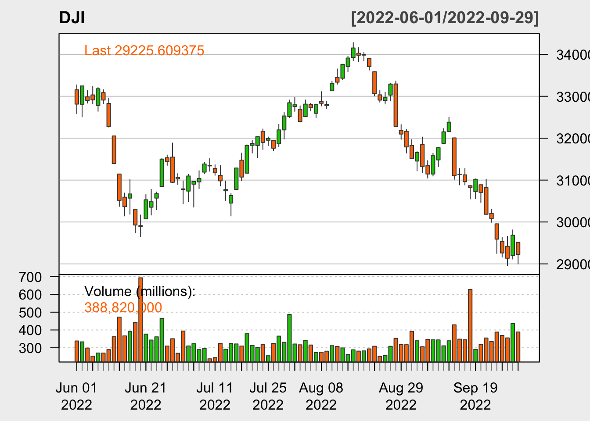
barChart(DJI,multi.col=TRUE,theme = 'white')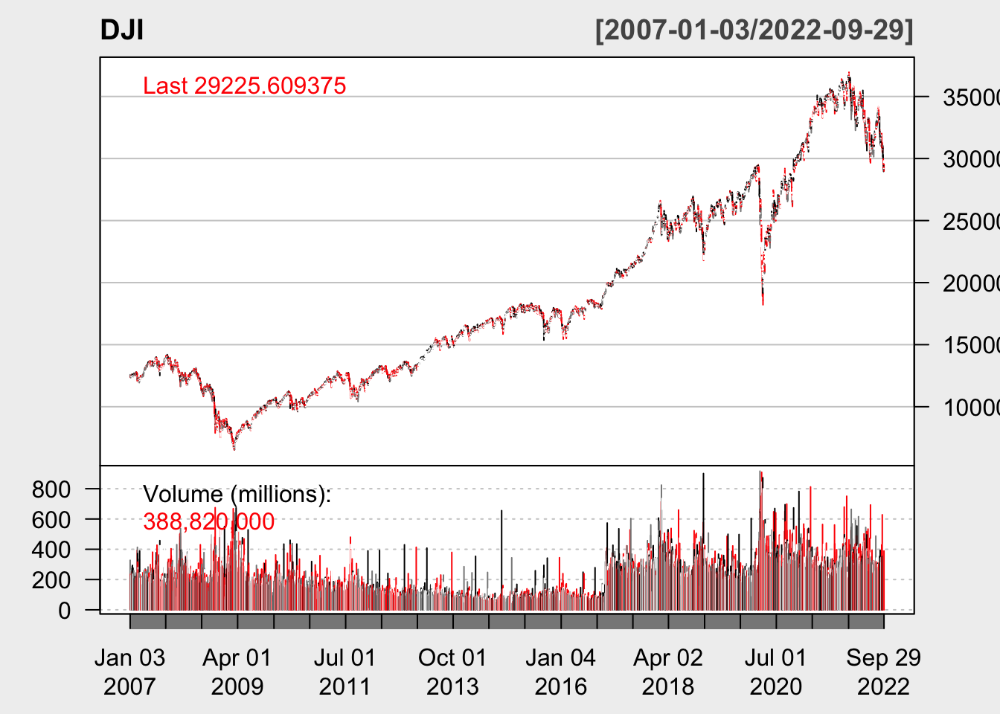
lineChart(DJI,line.type = 'l', theme = 'white') # line, choices include l, h, c, b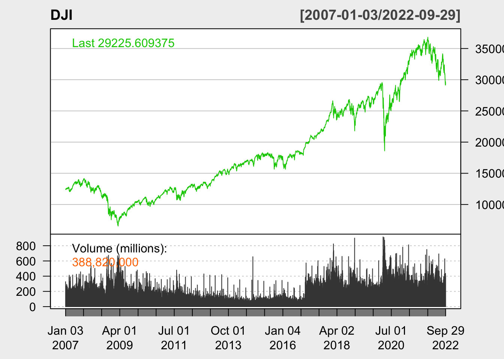
lineChart(DJI,line.type = 'h',theme = chartTheme('white', up.col='steelblue')) # histogram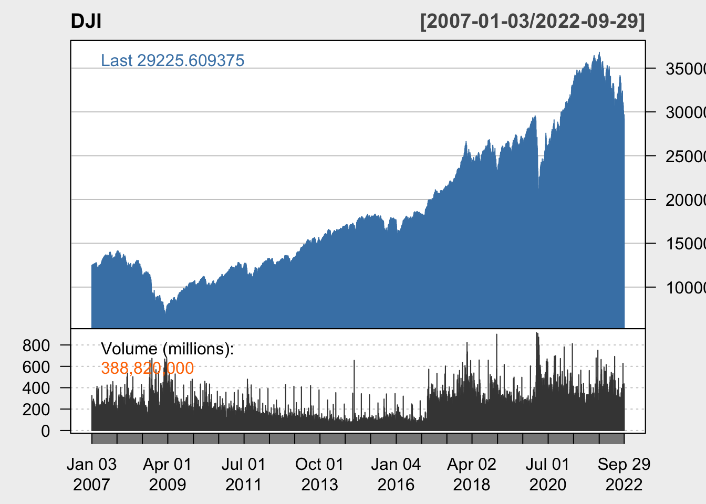
candleChart(DJI,subset = '2020-01/2022-01', multi.col=TRUE,theme = chartTheme('white'))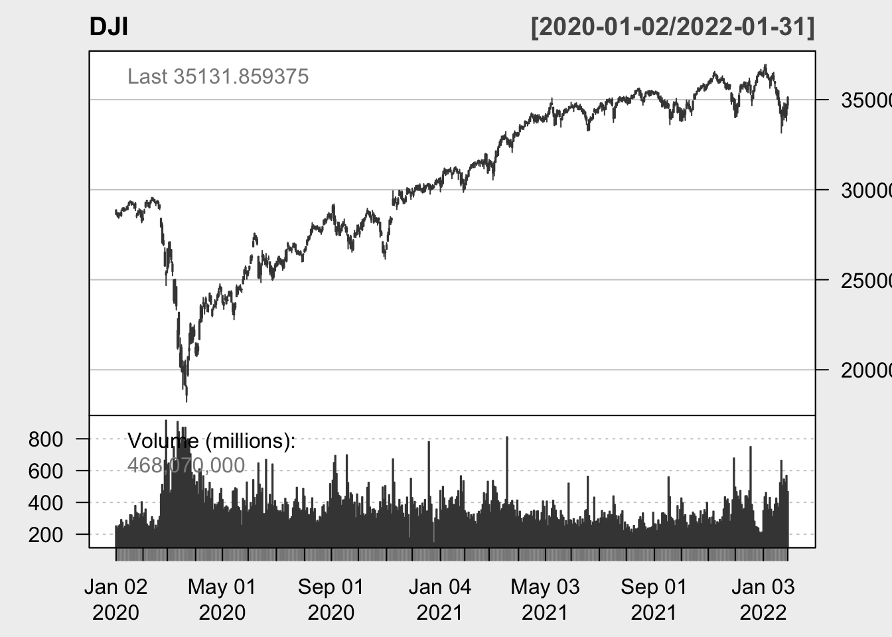
## grey => Open[t] < Close[t] and Op[t] < Cl[t-1]
## white => Op[t] < Cl[t] and Op[t] > Cl[t-1]
## red => Op[t] > Cl[t] and Op[t] < Cl[t-1]
## black => Op[t] > Cl[t] and Op[t] > Cl[t-1]## Plotting multiple series using ggplot2
# Collect stock names from Yahoo Finance
getSymbols(c("AAPL", "MSFT", "AMZN", "TSLA", "GOOGL"), src = "yahoo", from = start, to = end)[1] "AAPL" "MSFT" "AMZN" "TSLA" "GOOGL"# Prepare data as xts (time series object)
stocks = as.xts(data.frame(AAPL = AAPL[, "AAPL.Adjusted"],
MSFT = MSFT[, "MSFT.Adjusted"],
AMZN = AMZN[, "AMZN.Adjusted"],
GOOGL = GOOGL[, "GOOGL.Adjusted"],
TSLA = TSLA[, "TSLA.Adjusted"]))
# Index by date
names(stocks) = c("Apple", "Microsoft", "Amazon", "Google", "Tesla")
index(stocks) = as.Date(index(stocks))
# Plot
stocks_series = tidy(stocks) %>%
ggplot(aes(x=index,y=value, color=series)) +
geom_line(cex=1) +
theme_bw()
stocks_series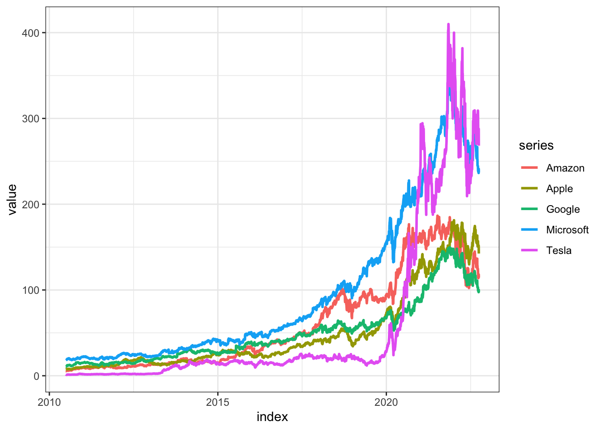
# Plot TWII
TWII_series = tidy(TWII$TWII.Adjusted) %>%
ggplot(aes(x=index,y=value, color=series)) +
geom_line(cex=1) +
theme_bw()
TWII_series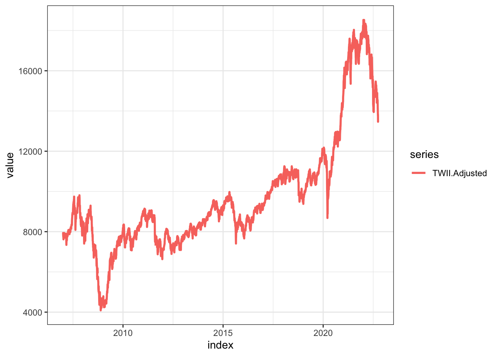
stocks_series = tidy(stocks) %>%
ggplot(aes(x=index,y=value, color=series)) +
geom_line(cex=1) +
theme_bw() +
labs(title = "Daily Stock Prices, 7/1/2010 - 11/16/2021",
subtitle = "End of Day Adjusted Prices",
caption = "Source: Yahoo Finance") +
xlab("Date") + ylab("Price") +
scale_color_manual(values = c("steelblue", "firebrick","purple", "forestgreen","darkgray")) +
theme(text = element_text(family = "Palatino"), plot.title = element_text(hjust = 0.5), plot.subtitle = element_text(hjust = 0.5)) +
theme(legend.position="top")
stocks_series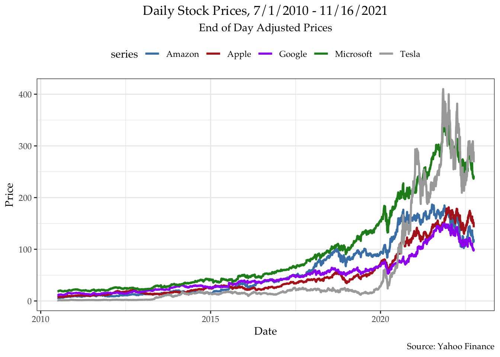
# Fetching stock data using Googlesheet
library(googlesheets4)
library(httpuv)
# Read stock data using Googlesheet with public link
# Needs authentication of Google account via browser (when prompted)
# aapl = read_sheet("https://docs.google.com/spreadsheets/d/1vTdXZkqpIZwUsnxM8zXiXVyKI7BbZ9zdPNEV_WLWDXo/edit?usp=sharing")